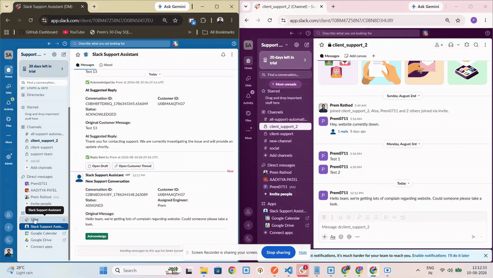

Problem
Manual triage doesn't scale, and it doesn't check who's actually around.
Support teams handling incoming Slack conversations often assign requests manually — whoever notices the message first, or whoever's turn it "feels like" it is. There's rarely a consistent check on whether the person being assigned is actually available before a new conversation lands in their queue. That gap is where response times slip.
Approach
Prototype the decision logic, not just the chat interface.
I designed a workflow where a new Slack conversation is detected automatically, routed to an available engineer using round-robin logic, and tracked through acknowledgement and response. AI assists the assigned engineer's response drafting — it does not communicate with the customer independently. I defined the problem, workflow, assignment logic, and testing scenarios; AI-assisted tooling helped build the implementation.
Workflow
From message to sent response, every state is tracked.
Scroll into this section and each stage lights up in the order it actually happens in the prototype. You can also replay it on demand below.
Availability Logic
Presence-aware routing, not just a static schedule.
Before assignment, the prototype checks each engineer's real-time Slack presence. Engineers marked away are excluded from that round's eligible pool — this is the specific piece of decision logic I was most interested in testing.
Demo
The prototype, running end to end.
Screen recording of the flow above: a new conversation comes in, availability is checked, an AI-suggested reply is generated, and the engineer approves and sends it.

This is the actual prototype running in a sanitized trial Slack workspace — not a mockup. No real customer information, credentials, or internal URLs are shown.
System Output
What the backend actually reports.
Sanitized log excerpt from a test run — no real customer data, tokens, or credentials.
Engineer availability check: Prem presence=active -> eligible Aditya presence=away -> excluded New Conversation Assigned Engineer: Prem Status: ASSIGNED Conversation Acknowledged Acknowledged By: Prem Status: ACKNOWLEDGED
What I Learned
The decision logic is the hard part — not the AI generation step.
Building this clarified how much of "support automation" is really about designing decision logic: who's eligible, when to escalate, when to hand control back to a human. The AI drafting step is comparatively the easy part — keeping a human in the approval loop for every outbound message was the design decision that mattered most.
Limitations & Next Steps
An honest read on where this stands.
This is a personal prototype, not a production deployment — it hasn't been tested at scale, doesn't yet handle multi-channel routing, and the assignment logic is intentionally simple (round-robin, not load- or skill-based). Repository is private; implementation details available on request.